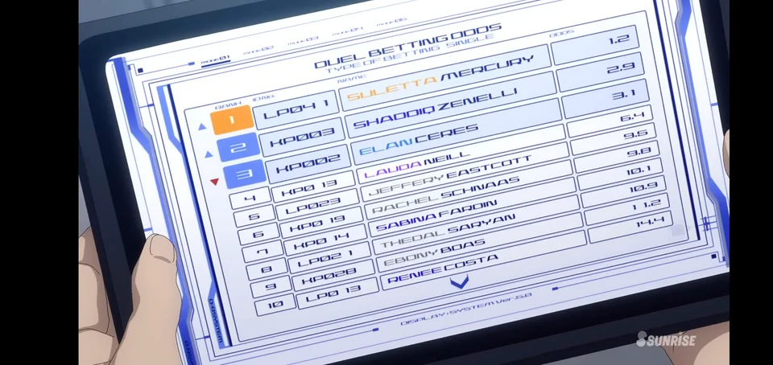
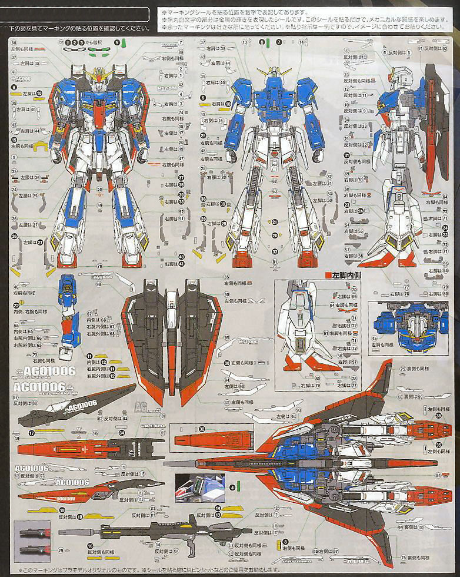
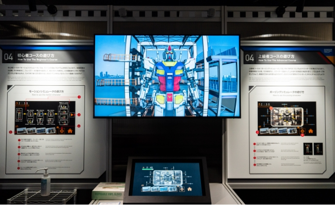

30.06.2024
I have no idea what purpose this website will have; I just had a stroke of inspiration. That inspiration is Gundam. The fonts used, the UI, plus some fan-made technical manuals I've seen while browsing.
This all came about from an odd happening: a new coworker is really into Gunpla. I mentioned how I always wanted to dive into it, then he brought in a resin kit for the Aerial from Witch of Mercury. Anyway, long story short, I ended up ordering tools and a Full Mechanics 1/100 Aerial for the resin kit. I still need more tools and supplies, but while browsing, this idea for a blog/personal site came to me. I plan to document my first-ever Gunpla build and other things here. Websites I host tend to die, so we'll see how this goes.
So the idea is to make this like a technical manual with UI elements you might expect on a sci-fi application. Sorry if that sounds vague. Below, you'll find reference materials I've been using.
  